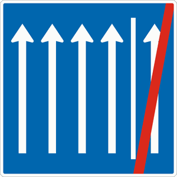

Zeichen 223.2-52
Seitenstreifen nicht mehr befahren - 4 Fahrstreifen + Seitenstreifen

Zu diesem Zeichen nennt der Katalog keinen Tatbestand, der die Nummer im Text führt.
Zeichen 223.2-52

Zu diesem Zeichen nennt der Katalog keinen Tatbestand, der die Nummer im Text führt.